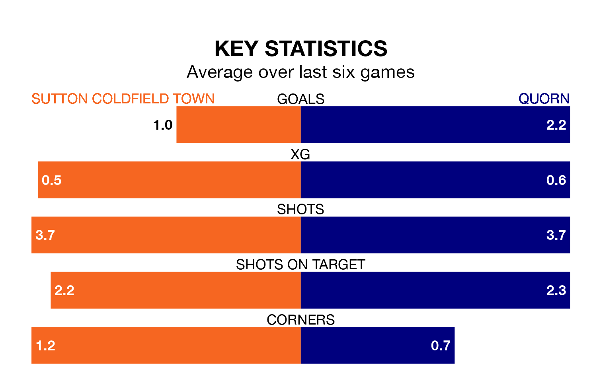

Quorn visit Sutton Coldfield Town at the Central Ground on Saturday on the back of four consecutive wins in the Northern Premier League Division One Midlands.
Quorn have picked up 14 points from their last six games, and they face a Sutton Coldfield side who lost their last match, and have collected four points from the last possible 18.
With 54 goals in 28 games so far this season, Quorn are scoring more than average in the league with 1.9 goals per game. And they are conceding fewer than average, letting in 37 goals at a rate of 1.3 per game.
Sutton Coldfield are also above average scorers, with 1.6 goals per game, compared to a league average of 1.5. They have also conceded 1.6 goals per game.
The visitors are sixth in the table after 28 games, of which they have won 14 and drawn seven, earning 49 points.
Town are five places behind Quorn in 11th, with 11 wins and six draws putting them on 39 points.
Sutton Coldfield's last match was on March 2, a 4-2 loss against Cambridge City.
Quorn beat Loughborough Dynamo 3-2 last time out, also on March 2.
Updated: 09:34 (UTC), 08/03/24